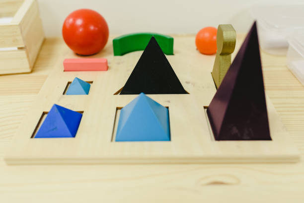
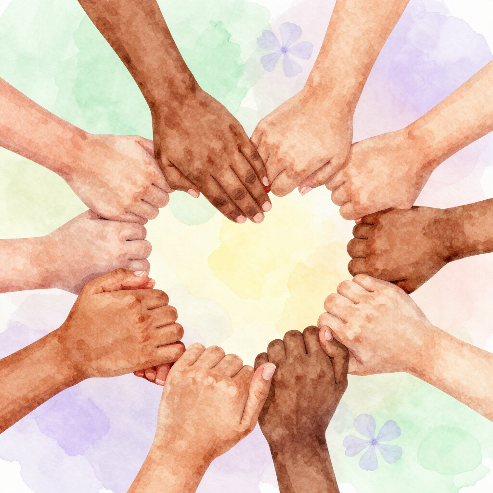

Le programme élémentaire
Pour l'élémentaire, Maria Montessori a développé un curriculum qui couvre les domaines du
socle commun. Ils sont chacun introduits par un grand récit dont le but est de permettre à
l'enfant de se représenter le grand ensemble au sein duquel s'organisent les connaissances
et de susciter de la gratitude pour tous les acteurs du vivant qui oeuvrent ensemble.
Une fois ce contexte global présenté, on s'intéresse à l'étude du détail. En Géographie
par exemple, on se penche sur le travail de chaque élément : l'eau, l'air… L'enfant est
encouragé à observer les méchanismes et faire des expériences afin de découvrir les
méchanismes qui sous-tendent notre monde.
Enfin, on guide l'enfant vers la découverte des relations entre toutes les parties
constitutives du domaine et la manière dont elles travaillent de concert pour maintenir
l'équilibre.

L'enfant découvre les principes qui animent le monde naturel, les Mathématiques, le Langage, la sphère culturelle humaine, par le biais du matériel et donc par l'expérience directe. Il cultive ainsi ses connaissances tout en tissant un lien direct avec le monde qui l'entoure, ancré dans le respect et la joie d'explorer.
L'exploration et la recherche
La classe est donc pensée comme un petit laboratoire de recherche, adapté à la taille et
aux besoins des enfants, au sein duquel ils peuvent trouver tous les outils nécessaires à
la découverte du monde. L'accent est mis sur l'acquisition des compétences qui permettent
de devenir un « chercheur » pour la vie. Le matériel vise à proposer une méthode pour
organiser sa pensée : il "apprend à apprendre".
En Histoire par exemple, les enfants explorent les différentes cultures humaines par le
biais des besoins fondamentaux. En partant des grandes tendances humaines qui s'expriment
partout où l'humain s'est installé, on lui propose un prisme par lequel aborder l'étude de
toutes les cultures. En plus d'intégrer des connaissances, il s'équipe également d'un
outil qui lui permet d'étendre son étude et sa compréhension à d'autres sujets.
Le curriculum socio-émotionnel
Maria Montessori insistait pour que la classe élémentaire soit un lieu qui fournisse à l'enfant de nombreuses occasions de vivre et s'organiser en société. Les questions de développement social font ainsi partie intégrante du curriculum de la classe élémentaire et ce sont les expériences quotidiennes des enfants qui en fournissent les sujets d'étude. De manière patiente, l'éducateur accueille les problématiques sociales des enfants et les accompagne dans leur recherche de solutions inclusives qui permettent le bien-être de tous au sein du groupe. A l'aide de divers outils, tels que la médiation par exemple, les enfants s'exercent à résoudre leurs conflits et à trouver des solutions pour accepter leurs différences et habiter leur environnement harmonieusement.
L'importance de la relation

Au sein de l'école, les adultes s'engagent à créer un cadre au sein duquel l'enfant se
sent en confiance, libre de faire ses expériences à son rythme et sans jugement.
Informés par les récentes découvertes en psychologie au sujet de l'importance de la
relation humaine pour le bon fonctionnement de l'intelligence, il s'agit de guider
l'enfant vers une discipline personnelle et une éthique de travail tout en respectant
son individualité et son unicité.
Pour accompagner chaque enfant dans le développement harmonieux de son potentiel, un
échange régulier et harmonieux entre l'équipe éducative et les familles est fondamental.
Dans ce but, l'équipe propose des rendez-vous réguliers à l'école afin d'échanger de
sujets d'éducation et pédagogie Montessori.